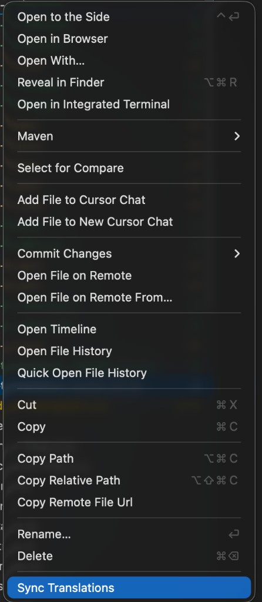

A Cursor/VS Code extension that detects missing i18n keys and translates them in batches via the Cursor CLI.
.vsix attached to the GitHub release. Then change the model to gemini-3-flash as described in step 3. Skipping that step will give you slower, lower-quality, and more expensive translations.
cursor to agent in 2026 — the extension auto-detects either.
curl https://cursor.com/install -fsSL | bash. Verify with agent --version.cursor --version.v1.4.0 also walks known install dirs (~/.cursor/cli/, /opt/homebrew/bin/, /Applications/Cursor.app/…/bin/) when PATH doesn't have the CLI — this catches the macOS GUI-launch case where which agent works in your terminal but the Extension Host can't see it. If detection still fails, run Cmd Shift P → "i18n: Detect Cursor CLI" to see a full diagnostic report and persist a discovered absolute path to i18nSync.cursorCliPath.
agent --print … (or legacy cursor agent --print …), which refuses to run until you have logged in. From any terminal:
# New CLI
agent login
# Legacy CLI
cursor login# New CLI
agent --print --model gemini-3-flash "say hi"
# Legacy CLI
cursor agent --print --model gemini-3-flash "say hi"login command. Re-run it whenever your session expires or you switch Cursor accounts.
i18n-en.json (or Messages.properties) source file.i18n-sync-translations-1.5.0.vsixDownload the file from the GitHub releases page, or directly from the repo root if shared internally.
Pick whichever method you prefer — both produce the same result.
Open Cursor → Cmd Shift P → "Extensions: Install from VSIX…" → pick the downloaded file.
From the directory containing the file:
# New CLI
agent --install-extension i18n-sync-translations-1.5.0.vsix
# Legacy CLI
cursor --install-extension i18n-sync-translations-1.5.0.vsixReload Cursor when prompted. Confirm the install by opening any i18n-en.json — you should see a globe icon in the editor title bar and an "i18n Sync" indicator in the status bar.
gemini-3-flash requiredgemini-3-flash. It has the strongest multilingual training data of the available models, and is the fastest and cheapest option for translation work. Other models (Claude / GPT / Composer / Grok) are noticeably weaker for non-English languages and waste API quota.
i18nSync.model.Open "Preferences: Open User Settings (JSON)" from the command palette and add:
{
"i18nSync.model": "gemini-3-flash",
"i18nSync.translationTone": "formal business",
"i18nSync.contextWindowSize": 5,
"i18nSync.batchSize": 40,
"i18nSync.concurrentLimit": 2
}src/assets/i18n/).i18n-en.json in the explorer → "Sync Translations" at the bottom of the menu.i18n-en.json is open, or run Cmd Shift P → "i18n: Sync Translations".
i18n-pt-BR.json, i18n-es-419.json, i18n-fr-CA.json, i18n-zh-Hans.json, i18n-zh-Hant.json, i18n-en-GB.json, etc. When a long-locale file does not yet exist, the extension uses the matching short-locale file (e.g. pt) as context so the model produces translations consistent with your existing tone and vocabulary.
If your Translation team wants a full step-by-step explanation (including context inference internals and worked examples), use these companion docs:
docs/translation-flow-guide.mddocs/translation-flow-guide.html| Setting | Default | Notes |
|---|---|---|
i18nSync.model | gemini-3-flash | Use this. Don't switch. |
i18nSync.translationTone | formal business | Free-text. e.g. casual, technical. |
i18nSync.productContext | "" | v1.5.0: optional product/domain description prepended to every prompt. Workspace-scoped — set in .vscode/settings.json per project. Example: "B2B payments platform handling invoices, payables, receivables". Helps the model pick domain-appropriate translations for ambiguous words like capture, settle, statement. 50–300 chars is the sweet spot. |
i18nSync.contextWindowSize | 5 | Number of sibling keys included as context. |
i18nSync.batchSize | 40 | Keys per CLI call. |
i18nSync.concurrentLimit | 3 | Parallel batches across languages. Bumped from 2 in v1.3.2. |
i18nSync.maxRetries | 3 | Per-batch retries with exponential backoff. |
i18nSync.autoSync | false | Background watcher: re-translates on save. |
i18nSync.autoSyncIntervalMinutes | 3 | Debounce before background sync triggers. |
i18nSync.cursorCliPath | auto | v1.4.0: probes agent/cursor on PATH, then walks known install dirs (~/.cursor/cli/, /opt/homebrew/bin/, /Applications/Cursor.app/…/bin/). Run "i18n: Detect Cursor CLI" to inspect the resolution. Set explicitly to agent, cursor, or an absolute path to override. |
i18nSync.cliTimeoutSeconds | 180 | Per-batch CLI timeout. Bumped from 90 to 180 in v1.3.2 — Cursor CLI/model backend latency frequently exceeds 90 s for a single call. |
i18nSync.debugMode | false | Verbose logging: live stdout/stderr streaming, PID, heartbeat every 15 s. Enable when a sync gets stuck. |
spawn agent ENOENTIf which agent works in your terminal but the extension still says it can't find the CLI, the Extension Host has a different PATH than your shell. On macOS, GUI apps launched from Spotlight/Finder/Dock inherit a minimal PATH from launchd that does not include shell additions from ~/.zshrc / ~/.bashrc (e.g. /opt/homebrew/bin, ~/.cursor/cli, ~/.local/bin).
Open the command palette (Cmd Shift P) and run "i18n: Detect Cursor CLI". The output channel will show:
cursorCliPath and platform.ENOENT, EACCES, exit code, …).PATH the Extension Host has, one entry per line.If the CLI was found at an absolute path (i.e. via the fallback search), the popup offers Save Path — that writes the absolute path into i18nSync.cursorCliPath so future syncs go straight to it without re-walking the search list.
If nothing was found, install the CLI (curl https://cursor.com/install -fsSL | bash) or set i18nSync.cursorCliPath to the absolute path returned by which agent in your terminal.
v1.4.0 also pre-flights this check before every sync, so a missing CLI now produces a single popup with "Detect CLI / Open Settings / View Output" instead of N batches × maxRetries identical ENOENT errors in the output channel.
The Cursor CLI needs to be signed in before agent (or legacy cursor agent) will respond. Run agent login (new CLI) or cursor login (legacy CLI) in any terminal, complete the browser sign-in, then verify with agent --print --model gemini-3-flash "say hi" (or cursor agent --print --model gemini-3-flash "say hi"). Re-run the matching login command whenever your session expires.
You hit your API quota for the day. Progress is saved automatically — reopen tomorrow and pick "Resume" when prompted. To slow burn rate: lower concurrentLimit to 1.
Toggle i18nSync.debugMode on to see the raw model output in the output channel. The most common cause is the model echoing the input format; v1.0.1+ already strips that, but if you're on an older build, update.
Enable i18nSync.debugMode in settings and re-run. With debug mode on, the output channel shows the exact CLI command, child PID, live stdout/stderr chunks as they arrive, and a heartbeat every 15 s. This makes it trivial to tell whether the CLI is producing any output at all (slow network / model) vs. hanging on something (auth prompt, stalled connection).
Even with debug mode off, partial stdout/stderr is dumped on every timeout along with a hint pointing at the most likely cause. If stdout/stderr are both empty on timeout, the CLI is almost always waiting on auth — run agent login (new CLI) or cursor login (legacy CLI).
If your network legitimately needs more than 90 s per batch, bump i18nSync.cliTimeoutSeconds (max 600).
Run "i18n: Sync Translations". The first lines of the output channel print the model name. If it doesn't say gemini-3-flash, go back to step 3.
Don't. gemini-3-flash is the right answer.